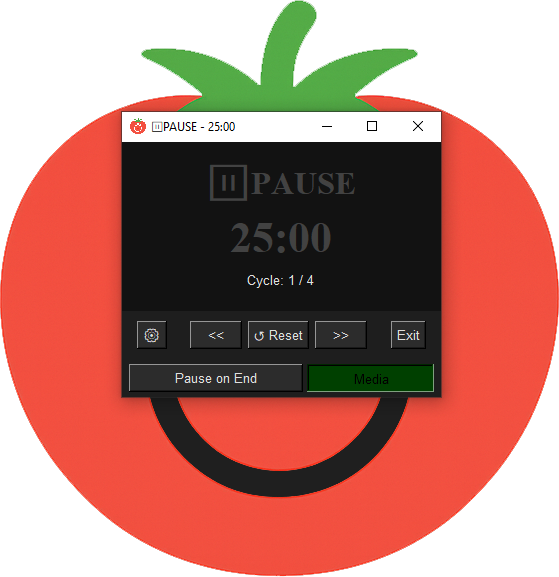

Умные циклы
Автоматический подсчет сессий до длинного перерыва. Фазы: Focus (работа), Short Rest (короткий отдых), Long Rest (длинный отдых), Pause (пауза). Настройте длительность каждой фазы под свой ритм.

Простой и гибкий таймер Pomodoro на Python с Tkinter. Настраиваемые темы, звуки и управление медиа для максимальной продуктивности. Полностью бесплатно с открытым исходным кодом.
Автоматический подсчет сессий до длинного перерыва. Фазы: Focus (работа), Short Rest (короткий отдых), Long Rest (длинный отдых), Pause (пауза). Настройте длительность каждой фазы под свой ритм.
Поддержка светлой, темной и пользовательских тем. Настройка цветов фона, кнопок и текста. 7 встроенных тем + создание своих.
Выбор своих MP3 треков для начала фазы. Автоматическое управление системным медиаплеером (Play/Pause) при переходе фазы. Работает с браузерами и большинством плееров.
Пресеты времени (Small, Medium, Big или пользовательский), режим "Поверх всех окон", автосохранение конфигурации в settings.json.
Готовый исполняемый файл для Windows. Не требует установки Python или каких-либо зависимостей. Просто скачайте и запустите.
⬇ Скачать .exeДля Linux, macOS или запуска из исходного кода. Требуется Python 3.8+. Подробные инструкции по установке в README.
📖 Инструкция в READMEДа, таймер Pomodoro полностью бесплатен и распространяется с открытым исходным кодом под лицензией MIT. Вы можете использовать его для личных и коммерческих целей без ограничений.
Готовая .exe версия работает на Windows 7 и новее. Для Linux и macOS можно запустить приложение из исходного кода при наличии Python 3.8+. Тестировалось на Python 3.11.9.
Для Windows — нет, доступна готовая, портативная .exe версия. Python требуется только если вы хотите запустить приложение из исходного кода или модифицировать его.
Приложение использует библиотеку keyboard для отправки системных событий медиа-клавишь Play/Pause. Это позволяет управлять воспроизведением в браузерах, Spotify, VLC и других плеерах. На некоторых системах могут потребоваться права администратора.